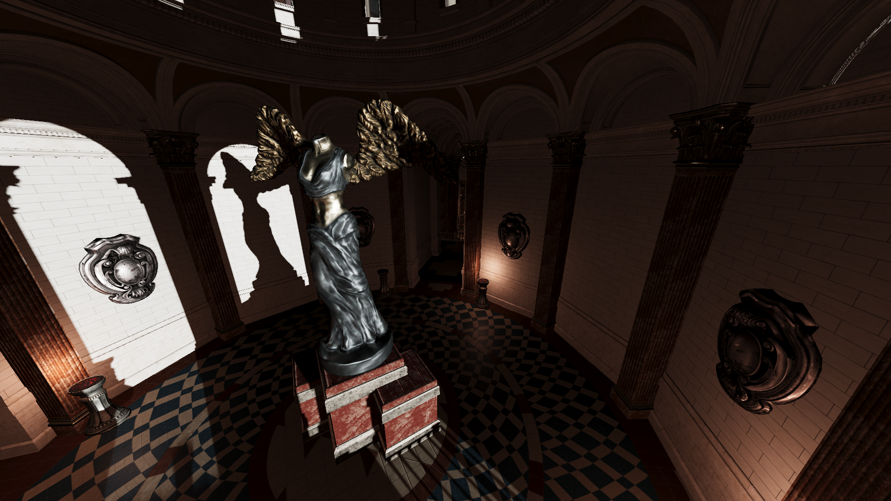

Projects

Vulkan Path-Tracer
A simple path-tracer written in C++ and GLSL that features both software- and hardware-accelerated ray-tracing, utilizing Vulkan’s ray-tracing extensions. This project began as an effort to learn how to construct and optimize Bounding Volume Hierarchies (BVH) using Surface Area Heuristics (SAH) to enhance ray-tracing performance. Initially, it was only a software path tracer but later evolved into a sandbox for experimenting with Vulkan ray-tracing. View on GitHub

Hobby Rendering Engine (DXR-Project)
This is a personal rendering and game engine created to test and experiment with a variety of rendering techniques. Initially conceived as a small project for learning DirectX Raytracing (DXR) and experimenting with this, at the time, new API, it has grown into a larger project over the years. It now features both DirectX 12 (D3D12) and Vulkan backends. The project focuses on abstracting graphics APIs, exploring game engine architecture, and implementing advanced rendering techniques. View on GitHub
Large Game Project
Crazy Canvas is a Capture-the-Flag First-Person Shooter (FPS) with a twist: all enemies are invisible. Players are equipped with paint guns that can color everything in the world, including enemy players. By observing reflective surfaces like mirrors, players can spot their opponents and take the shot. When an enemy is covered in enough paint, they are eliminated.
This project was developed from scratch in a group over 14 weeks during university. The game is written in C++ and GLSL and uses Vulkan as the graphics API. I worked on much of the core engine as well as various rendering techniques, including mesh-shaders using meshlets, different anti-aliasing techniques such as Temporal Anti-Aliasing (TAA) and Fast Approximate Anti-Aliasing (FXAA), and more.